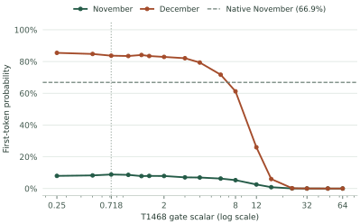
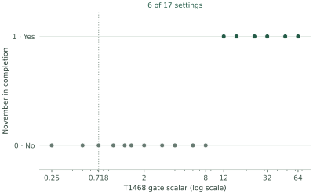

When does November return?
With L29–T2375 off, increasing L34–T1468 made the model restate the ordinal and then name November at every tested scalar from 12 through 64.
Qwen3-4B completion prompt the eleventh month of the year is
T2375 ablation weakens T1468
Both measurements are at the final is token. L34–T1468 stayed active after we removed L29–T2375’s contribution there.
- Native T1468 gate
- 1.290
- With T2375 off
- 0.718
- Change
- −44.4%
Where T1468 activates
Dashboard description
Article “An” Preceding Noun
The article "an" or "An" preceding a noun, often at the start of a sentence or list item.
All 18 strongest and medium examples in the audit peak on an or An, including word fragments. Some windows also contain active tokens just before 11.
Examples just before 11
Highlight marks the active token. · represents a space.
| Saved text excerpt | Gate |
|---|---|
about an·11-year-old | 4.438 |
rate is at·11.4 percent | 0.617 |
dynasty in 1911 | 0.602 |
Immediate answer and full completion
We kept T2375 off at the final is, then varied T1468’s scalar at that position while keeping its operator output, UVx, fixed to the T2375-off run. The dotted line marks the original ablated scalar, 0.718.
First-token probability

Does the completion mention November?


What the model says
At scalar 12, the first generated token is a space. The first sentence then restates the ordinal and names November, even though immediate P(November) is just 2.53%.
| T1468 scalar | P(November) next | P(December) next | Beginning of generated completion | November mentioned? |
|---|---|---|---|---|
| 0.718 Baseline | 8.83% | 83.68% | december. the twelfth month is january. | No |
| 1.290 Native scalar | 7.83% | 84.12% | december. the twelfth month is january. | No |
| 8 | 5.28% | 61.21% | december. the twelfth month is january. | No |
| 12 | 2.53% | 25.97% | 11th month of the year, which is November. | Yes |
| 16 | 0.85% | 5.98% | 11th month of the year, which is November. | Yes |
The six November completions share the same opening sentence shown above. Each generation was capped at 24 new tokens.